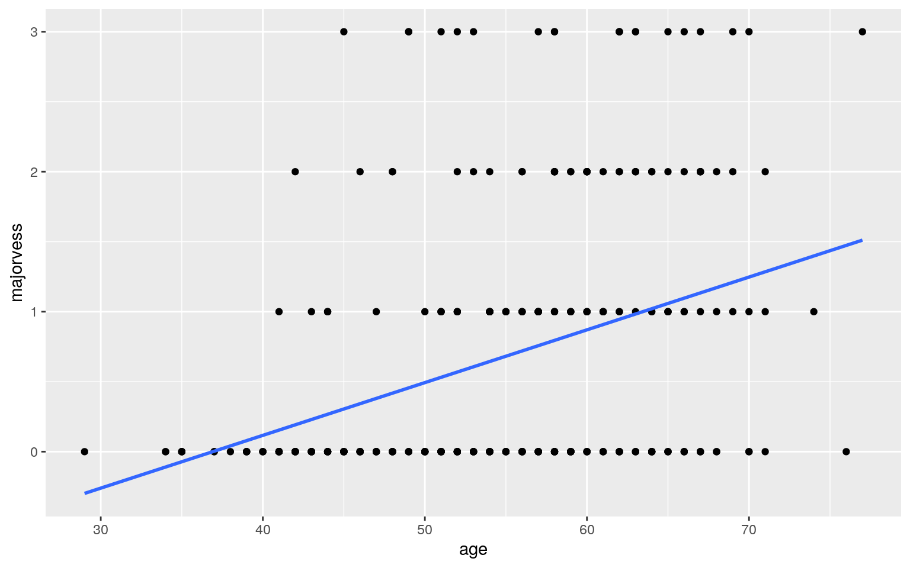

May 9, 2021
Modeling
Instructions
A knitted R Markdown document (preferably HTML) and the raw R Markdown file (as .Rmd) should both be submitted to Canvas by 11:59pm on the due date. These two documents will be graded jointly, so they must be consistent (i.e., don’t change the R Markdown file without also updating the knitted document). In the .Rmd file for Project 2, you can copy the first code-chunk into your project .Rmd file to get better formatting. Notice that you can adjust the opts_chunk$set(…) above to set certain parameters if necessary to make the knitting cleaner (you can globally set the size of all plots, etc). You can copy the set-up chunk in Project2.Rmd: I have gone ahead and set a few for you (such as disabling warnings and package-loading messges when knitting)!
Like before, I envision your written text forming something of a narrative structure around your code/output. All results presented must have corresponding code. Any answers/results/plots etc. given without the corresponding R code that generated the result will not be graded. Furthermore, all code contained in our project document should work properly. Please do not include any extraneous code or code which produces error messages. (Code which produces warnings is fine as long as you understand what the warnings mean.)
Find data:
Find one dataset with at least 5 variables (ideally more!) that you want to use to build models/test hypotheses. At least one should be categorical (with 2-5 groups, ideally; definitely fewer than 10) and at least two should be numeric (taking on more than 10 distinct values). Ideally, at least of your variables will be binary (if not, you will have to create one by discretizing a numeric or collapsing levels of a categorical). You will need a minimum of 40 observations (at least 10 observations for every explanatory variable you have, ideally 20+ observations/variable).
It is perfectly fine to use either dataset (or the merged dataset, or a subset of your variables) from Project 1. However, I might encourage you to diversify things a bit and choose a different dataset to work with (particularly if the variables did not reveal interesting associations in Project 1 that you want to follow up with). The only requirement/restriction is that you may not use data from any examples we have done in class or lab. It would be a good idea to pick more cohesive data this time around (i.e., variables that you actually thing might have a relationship you would want to test). Think more along the lines of your Biostats project.
Again, you can use data from anywhere you want (see bottom for resources)! If you want a quick way to see whether a built-in (R) dataset has binary and/or character (i.e., categorical) variables, check out this list: https://vincentarelbundock.github.io/Rdatasets/datasets.html.
Guidelines and Rubric
0. (5 pts) Introduce your dataset and each of your variables (or just your main variables if you have lots) in a paragraph. What are they measuring? How many observations?
My data set for this project is focused on heart disease as it is the top silent killer in the United States. In particular, this dataset uses data from several locations such as Switzerland, Hungary, Cleveland, and Long Beach(VA). There are 920 observations of 16 variables, but I chose to omit any with values of NA. This brought my observations down to 303 for every 16 variables. The main variables I chose to use are age, sex, dataset, chol, thalch,ca,and num. Age refers to the age of the patient, and sex is the biological sex of the subject. Chol is the cholesterol level measured in the blood of the individual, and Thalch is the maximum heart rate recorded over a minute time interval. Higher cholesterol levels and maximum heart rate can be used to assess high blood pressure, which are risk factors for cardiovascular diseases. Ca is the number of major vessels (arteries/veins) impacted by heart disease. Dataset is where the data is collected from and depending on the location, we can make inferences on a patient’s risk factor of heart disease based on access to health care. Lastly, num refers to an integer of 0 to 4 that signifies the risk of heart disease of each individual. The value of 0 being less at risk and 4 being highly at risk for heart disease.
1. (15 pts) Perform a MANOVA testing whether any of your numeric variables (or a subset of them, if including them all is unreasonable or doesn’t make sense) show a mean difference across levels of one of your categorical variables (3). If they do, perform univariate ANOVAs to find response(s) showing a mean difference across groups (3), and perform post-hoc t tests to find which groups differ (3). Discuss the number of tests you have performed, calculate the probability of at least one type I error (if unadjusted), and adjust the significance level accordingly (bonferroni correction) before discussing significant differences (3). Briefly discuss some of the MANOVA assumptions and whether or not they are likely to have been met here (no need for anything too in-depth) (2).
library(dplyr)
library(tidyverse)
library(rstatix)
library(modelr)
library(vegan)
library(gridExtra)
HD.data <- read.csv("heart_disease_uci.csv",sep=",",header=T)
HD<- na.omit(HD.data)
sex <- HD$sex
combo <- HD %>%select(chol, thalch, num)
man <- manova(cbind(chol,thalch,num)~sex, data=HD)
summary(man)## Df Pillai approx F num Df den Df Pr(>F)
## sex 1 0.10393 11.56 3 299 3.437e-07 ***
## Residuals 301
## ---
## Signif. codes: 0 '***' 0.001 '**' 0.01 '*' 0.05 '.' 0.1
' ' 1summary.aov(man)## Response chol :
## Df Sum Sq Mean Sq F value Pr(>F)
## sex 1 37833 37833 13.336 0.000307 ***
## Residuals 301 853913 2837
## ---
## Signif. codes: 0 '***' 0.001 '**' 0.01 '*' 0.05 '.' 0.1
' ' 1
##
## Response thalch :
## Df Sum Sq Mean Sq F value Pr(>F)
## sex 1 580 579.63 1.0877 0.2978
## Residuals 301 160395 532.87
##
## Response num :
## Df Sum Sq Mean Sq F value Pr(>F)
## sex 1 23.35 23.3458 16.282 6.927e-05 ***
## Residuals 301 431.58 1.4338
## ---
## Signif. codes: 0 '***' 0.001 '**' 0.01 '*' 0.05 '.' 0.1
' ' 1HD %>%group_by(sex)%>%summarize(mean(chol),mean(thalch), mean(num))## # A tibble: 2 x 4
## sex `mean(chol)` `mean(thalch)` `mean(num)`
## <fct> <dbl> <dbl> <dbl>
## 1 Female 262. 151. 0.536
## 2 Male 238. 148. 1.13pairwise.t.test(HD$chol,HD$sex, p.adj = "none")##
## Pairwise comparisons using t tests with pooled SD
##
## data: HD$chol and HD$sex
##
## Female
## Male 0.00031
##
## P value adjustment method: nonepairwise.t.test(HD$thalch, HD$sex, p.adj="none")##
## Pairwise comparisons using t tests with pooled SD
##
## data: HD$thalch and HD$sex
##
## Female
## Male 0.3
##
## P value adjustment method: nonepairwise.t.test(HD$num, HD$sex, p.adj="none")##
## Pairwise comparisons using t tests with pooled SD
##
## data: HD$num and HD$sex
##
## Female
## Male 6.9e-05
##
## P value adjustment method: noneThe MANOVA tests indicate significance for “sex and cholesterol” and “sex and num” due to the p-values being less than 0.05. There is a lack of significance between “sex and thalch” due to the p-value being 0.2978. A total of 10 tests were performed. The MANOVA assumptions are likely to be met.
- 2. (10 pts) Perform some kind of randomization test on your data (that makes sense). The statistic can be anything you want (mean difference, correlation, F-statistic/ANOVA, chi-squared), etc. State null and alternative hypotheses, perform the test, and interpret the results (7). Create a plot visualizing the null distribution and the test statistic (3).
summary(aov(age~num,data=HD))## Df Sum Sq Mean Sq F value Pr(>F)
## num 1 1182 1182 15.35 0.000111 ***
## Residuals 301 23168 77
## ---
## Signif. codes: 0 '***' 0.001 '**' 0.01 '*' 0.05 '.' 0.1
' ' 1pairwise.t.test(HD$age, HD$num, p.adj = "none")##
## Pairwise comparisons using t tests with pooled SD
##
## data: HD$age and HD$num
##
## 0 1 2 3
## 1 0.0403 - - -
## 2 0.0010 0.1718 - -
## 3 0.0421 0.7768 0.3303 -
## 4 0.0058 0.1181 0.5575 0.1954
##
## P value adjustment method: nonef_value <- 15.35
Fs <- replicate(5000,{
new <- HD%>%mutate(age=sample(age))
SSW <- new %>% group_by(num) %>% summarize(SSW=sum((age-mean(age))^2)) %>% summarize(sum(SSW)) %>% pull
SSB <- new %>% mutate(mean=mean(age)) %>% group_by(num) %>% mutate(groupmean=mean(age)) %>%
summarize(SSB=sum((mean-groupmean)^2)) %>% summarize(sum(SSB))%>% pull
(SSB/1)/(SSW/301)
})
{hist(Fs, prob=T); abline(v = f_value, col="blue",add=T)}mean(Fs>f_value)## [1] 0.006The null is there is no relationship between age and risk of heart disease. The alternative hypothesis is that there is a relationship between age and heart disease. Based on the p-value and histogram, there is a relationship between age and heart disease as the line is skewed towards the right and p-value being less than 0.05.
3. (40 pts) Build a linear regression model predicting one of your response variables from at least 2 other variables, including their interaction. Mean-center any numeric variables involved in the interaction.
- Interpret the coefficient estimates (do not discuss significance) (10)
- Plot the regression using
ggplot()using geom_smooth(method=“lm”). If your interaction is numeric by numeric, refer to code in the slides to make the plot or check out theinteractionspackage, which makes this easier. If you have 3 or more predictors, just chose two of them to plot for convenience. (10) - What proportion of the variation in the outcome does your model explain? (4)
- Check assumptions of linearity, normality, and homoskedasticity either graphically or using a hypothesis test (5)
- Regardless, recompute regression results with robust standard errors via
coeftest(..., vcov=vcovHC(...)). Discuss significance of results, including any changes from before/after robust SEs if applicable. (10)
library(interactions)
#Age vs. Cholesterol
age <- HD$age
cholesterol <- HD$chol
HD%>%ggplot(aes(age,cholesterol))+geom_point()fitted<-lm(cholesterol~age, data= HD)
summary(fitted)##
## Call:
## lm(formula = cholesterol ~ age, data = HD)
##
## Residuals:
## Min 1Q Median 3Q Max
## -250.554 -32.005 -5.612 29.363 304.388
##
## Coefficients:
## Estimate Std. Error t value Pr(>|t|)
## (Intercept) 183.7543 18.9283 9.708 < 2e-16 ***
## age 1.1322 0.3427 3.304 0.00107 **
## ---
## Signif. codes: 0 '***' 0.001 '**' 0.01 '*' 0.05 '.' 0.1
' ' 1
##
## Residual standard error: 53.47 on 301 degrees of freedom
## Multiple R-squared: 0.035, Adjusted R-squared: 0.0318
## F-statistic: 10.92 on 1 and 301 DF, p-value: 0.001067HD%>%ggplot(aes(age,cholesterol))+geom_point()+geom_smooth(method = 'lm',se=F) #Age vs. Num
num <- HD$num
HD%>%ggplot(aes(age,num))+geom_point()fit <- lm(num~age,data=HD)
summary(fit)##
## Call:
## lm(formula = num ~ age, data = HD)
##
## Residuals:
## Min 1Q Median 3Q Max
## -1.5877 -0.8952 -0.5339 0.8037 3.5565
##
## Coefficients:
## Estimate Std. Error t value Pr(>|t|)
## (Intercept) -0.700600 0.424521 -1.650 0.099918 .
## age 0.030109 0.007685 3.918 0.000111 ***
## ---
## Signif. codes: 0 '***' 0.001 '**' 0.01 '*' 0.05 '.' 0.1
' ' 1
##
## Residual standard error: 1.199 on 301 degrees of freedom
## Multiple R-squared: 0.04852, Adjusted R-squared: 0.04536
## F-statistic: 15.35 on 1 and 301 DF, p-value: 0.0001106HD%>%ggplot(aes(age,cholesterol))+geom_point()+geom_smooth(method='lm',se=F)
#Age vs. Ca
majorvess <- HD$ca
HD%>%ggplot(aes(age,majorvess))+geom_point()fit1 <- lm(age~majorvess,data=HD)
summary(fit1)##
## Call:
## lm(formula = age ~ majorvess, data = HD)
##
## Residuals:
## Min 1Q Median 3Q Max
## -23.1990 -6.1990 0.3577 5.8010 23.8010
##
## Coefficients:
## Estimate Std. Error t value Pr(>|t|)
## (Intercept) 52.1990 0.5910 88.327 < 2e-16 ***
## majorvess 3.4811 0.5163 6.743 7.95e-11 ***
## ---
## Signif. codes: 0 '***' 0.001 '**' 0.01 '*' 0.05 '.' 0.1
' ' 1
##
## Residual standard error: 8.383 on 301 degrees of freedom
## Multiple R-squared: 0.1312, Adjusted R-squared: 0.1283
## F-statistic: 45.46 on 1 and 301 DF, p-value: 7.951e-11HD%>%ggplot(aes(age,majorvess))+geom_point()+geom_smooth(method='lm',se=F) Based on the coefficient estimates between cholesterol and age, for everything increase of cholesterol, age increases by 1.1322 suggesting that older patients have difficulty in processing cholesterol leading to buildup. For age and risk of heart disease, age only increases a slight portion of 0.03019 for risk of heart disease. Based on the data, this is supported, because not all subjects are elderly. For each increase of age, majorvess is increasing by 3.4811.
- 4. (5 pts) Rerun same regression model (with the interaction), but this time compute bootstrapped standard errors (either by resampling observations or residuals). Discuss any changes you observe in SEs and p-values using these SEs compared to the original SEs and the robust SEs)
boot_dat<- sample_frac(HD, replace=T)
samp_distn<-replicate(5000, {
boot_dat <- sample_frac(HD, replace=T)
fit <- lm(age~cholesterol*majorvess, data=boot_dat)
coef(fit)
})
samp_distn %>% t %>% as.data.frame %>% summarize_all(sd)## (Intercept) cholesterol majorvess cholesterol:majorvess
## 1 2.78518 0.01120094 2.634151 0.01001455samp_distn%>%t%>%as.data.frame%>%gather%>%group_by(key)%>% summarize(lower=quantile(value,.025), upper=quantile(value,.975))## # A tibble: 4 x 3
## key lower upper
## <chr> <dbl> <dbl>
## 1 (Intercept) 49.0 59.9
## 2 cholesterol -0.0218 0.0221
## 3 cholesterol:majorvess -0.0198 0.0197
## 4 majorvess -5.24 5.22I observed major changes in the Ses and p-values compared to the values generated in section 3. The values are very different from the ones previously.
5. (30 pts) Fit a logistic regression model predicting a binary variable (if you don’t have one, make/get one) from at least two explanatory variables (interaction not necessary).
- Interpret coefficient estimates in context (10)
- Report a confusion matrix for your logistic regression (5)
- Compute and discuss the Accuracy, Sensitivity (TPR), Specificity (TNR), Precision (PPV), and AUC of your model (5)
- Using ggplot, make a density plot of the log-odds (logit) colored/grouped by your binary outcome variable (5)
- Generate an ROC curve (plot) and calculate AUC (either manually or with a package); interpret (5)
library(plotROC)
library(lmtest)
HD1 <-HD %>% mutate(y=ifelse(sex=="male",1,0))
fit2<-glm(dataset ~ num + thalch, data=HD1, family="binomial"(link="logit"))
exp(coef(fit2))## (Intercept) num thalch
## 32.0434342 0.3911030 0.9499393probs<-predict(fit2,type="response")
coeftest(fit2)##
## z test of coefficients:
##
## Estimate Std. Error z value Pr(>|z|)
## (Intercept) 3.467092 3.060113 1.1330 0.25722
## num -0.938784 0.686707 -1.3671 0.17160
## thalch -0.051357 0.022306 -2.3024 0.02131 *
## ---
## Signif. codes: 0 '***' 0.001 '**' 0.01 '*' 0.05 '.' 0.1
' ' 1probs<-predict(fit2,type="response")
table(predict=as.numeric(probs>.5),truth=HD$dataset) %>% addmargins## truth
## predict Cleveland Hungary Switzerland VA Long Beach Sum
## 0 299 2 0 2 303
## Sum 299 2 0 2 303#Accuracy
(299+2)/303## [1] 0.9933993#Sensitivity (TPR)
2/2## [1] 1#Specificity (TNR)
299/299## [1] 1#Precision (PPV)
299/299## [1] 1HD1$logit<-predict(fit2,type="link")
HD1%>%ggplot()+geom_density(aes(logit,color=sex,fill=sex), alpha=.4)+ theme(legend.position=c(.85,.85))+geom_vline(xintercept=0)+xlab("logit (log-odds)")+
geom_rug(aes(logit,color=sex))library(plotROC)The result of my density plot does not show a strong relationship and exhibits lots of overlap between the two sexes. We also see the plot skewing to the left of negative values. Overall, it is a poor model. My sensitivity variable is positive 1, while my TPR value is calculated to be 1 as well. My accuracy value is evaluated to be 0.993, and my TNR value is found to be 1. In addition, the precision value was 1 due to the usage of the location in which the observations were collected.
6. (25 pts) Perform a logistic regression predicting the same binary response variable from ALL of the rest of your variables (the more, the better!)
- Fit model, compute in-sample classification diagnostics (Accuracy, Sensitivity, Specificity, Precision, AUC), and interpret (5)
- Perform 10-fold (or repeated random sub-sampling) CV with the same model and report average out-of-sample classification diagnostics (Accuracy, Sensitivity, Specificity, Precision, and AUC); interpret AUC and compare with the in-sample metrics (10)
- Perform LASSO on the same model/variables. Choose lambda to give the simplest model whose accuracy is near that of the best (i.e.,
lambda.1se). Discuss which variables are retained. (5) - Perform 10-fold CV using only the variables lasso selected: compare model’s out-of-sample AUC to that of your logistic regressions above (5)
HD2 <- HD1 %>%mutate(y = ifelse(sex == "male",1,0))
null <- HD2$sex
log_reg_all <-glm(y~., data=HD2, family = "binomial")
prob2 <- predict(log_reg_all)
coef(log_reg_all)## (Intercept) id age sexMale
## -2.656607e+01 -1.074405e-16 8.168211e-16 5.252607e-17
## datasetHungary datasetVA Long Beach cpatypical angina
cpnon-anginal
## 2.250261e-14 7.354481e-14 -4.463702e-15 -1.136013e-14
## cptypical angina trestbps chol fbsTRUE
## 6.844705e-14 -2.925013e-16 3.116192e-17 3.360839e-14
## restecgnormal restecgst-t abnormality thalch exangTRUE
## -3.670816e-15 -9.103249e-15 -6.059768e-17 -1.469435e-14
## oldpeak slopedownsloping slopeflat slopeupsloping
## -2.821380e-15 6.755811e-14 -1.517921e-14 -1.510256e-14
## ca thalfixed defect thalnormal thalreversable defect
## -6.211711e-15 1.018690e-13 3.442530e-15 4.630224e-15
## num logit
## -5.003949e-15 NAlibrary(glmnet)
set.seed(348)
y<-as.matrix(HD$sex)
x<-model.matrix(sex~.,data=HD)[,-1]
head(x)## id age datasetHungary datasetSwitzerland datasetVA Long
Beach cpatypical angina cpnon-anginal
## 1 1 63 0 0 0 0 0
## 2 2 67 0 0 0 0 0
## 3 3 67 0 0 0 0 0
## 4 4 37 0 0 0 0 1
## 5 5 41 0 0 0 1 0
## 6 6 56 0 0 0 1 0
## cptypical angina trestbps chol fbsTRUE restecglv
hypertrophy restecgnormal
## 1 1 145 233 1 1 0
## 2 0 160 286 0 1 0
## 3 0 120 229 0 1 0
## 4 0 130 250 0 0 1
## 5 0 130 204 0 1 0
## 6 0 120 236 0 0 1
## restecgst-t abnormality thalch exangTRUE oldpeak
slopedownsloping slopeflat slopeupsloping ca
## 1 0 150 0 2.3 1 0 0 0
## 2 0 108 1 1.5 0 1 0 3
## 3 0 129 1 2.6 0 1 0 2
## 4 0 187 0 3.5 1 0 0 0
## 5 0 172 0 1.4 0 0 1 0
## 6 0 178 0 0.8 0 0 1 0
## thalfixed defect thalnormal thalreversable defect num
## 1 1 0 0 0
## 2 0 1 0 2
## 3 0 0 1 1
## 4 0 1 0 0
## 5 0 1 0 0
## 6 0 1 0 0Where do I find data again?
You can choose ANY datasets you want that meet the above criteria for variables and observations. You can make it as serious as you want, or not, but keep in mind that you will be incorporating this project into a portfolio webpage for your final in this course, so choose something that really reflects who you are, or something that you feel will advance you in the direction you hope to move career-wise, or something that you think is really neat, or whatever. On the flip side, regardless of what you pick, you will be performing all the same tasks, so it doesn’t end up being that big of a deal.
If you are totally clueless and have no direction at all, log into the server and type
data(package = .packages(all.available = TRUE))This will print out a list of ALL datasets in ALL packages installed on the server (a ton)! Scroll until your eyes bleed! Actually, do not scroll that much… To start with something more manageable, just run the command on your own computer, or just run data() to bring up the datasets in your current environment. To read more about a dataset, do ?packagename::datasetname.
If it is easier for you, and in case you don’t have many packages installed, a list of R datasets from a few common packages (also downloadable in CSV format) is given at the following website: https://vincentarelbundock.github.io/Rdatasets/datasets.html.
A good package to download for fun/relevant data is
fivethiryeight. Runinstall.packages("fivethirtyeight"),load the packages withlibrary(fivethirtyeight), rundata(), and then scroll down to view the datasets. Here is an online list of all 127 datasets (with links to the 538 articles). Lots of sports, politics, current events, etc.If you have already started to specialize (e.g., ecology, epidemiology) you might look at discipline-specific R packages (vegan, epi, respectively). We will be using some tools from these packages later in the course, but they come with lots of data too, which you can explore according to the directions above
However, you emphatically DO NOT have to use datasets available via R packages! In fact, I would much prefer it if you found the data from completely separate sources and brought them together (a much more realistic experience in the real world)! You can even reuse data from your SDS328M project, provided it shares a variable in common with other data which allows you to merge the two together (e.g., if you still had the timestamp, you could look up the weather that day: https://www.wunderground.com/history/). If you work in a research lab or have access to old data, you could potentially merge it with new data from your lab!
Here is a curated list of interesting datasets (read-only spreadsheet format): https://docs.google.com/spreadsheets/d/1wZhPLMCHKJvwOkP4juclhjFgqIY8fQFMemwKL2c64vk/edit
Here is another great compilation of datasets: https://github.com/rfordatascience/tidytuesday
Here is the UCI Machine Learning Repository: https://archive.ics.uci.edu/ml/index.php
Here is another good general place to look: https://www.kaggle.com/datasets
To help narrow your search down or to see interesting variable ideas, check out https://www.tylervigen.com/spurious-correlations. This is the spurious correlations website, and it is fun, but if you look at the bottom of each plot you will see sources for the data. This is a good place to find very general data (or at least get a sense of where you can scrape data together from)!
If you are interested in medical data, check out www.countyhealthrankings.org
If you are interested in scraping UT data, they make loads of data public (e.g., beyond just professor CVs and syllabi). Check out all the data that is available in the statistical handbooks: https://reports.utexas.edu/statistical-handbook
Broader data sources:
Data.gov 186,000+ datasets!
Social Explorer is a nice interface to Census and American Community Survey data (more user-friendly than the government sites). May need to sign up for a free trial.
U.S. Bureau of Labor Statistics
Gapminder, data about the world.
…